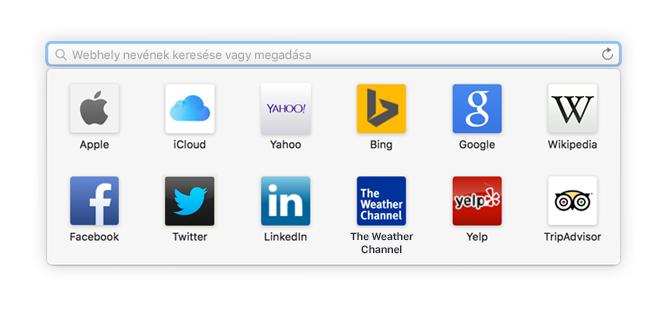
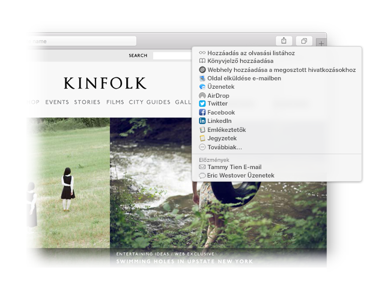

Könnyen elérheti kedvenc webhelyeit.
Az intelligens keresési mezőre kattintva hozzáférhet a kedvenc webhelyeihez. Egy kattintással máris a kívánt webhelyen lehet.

Rögzíthető webhelyek.
Ha balra húzza valamelyik lapot, rögzítheti a webhelyet, és az mindig elérhető lesz a lapsávról.

Megoszthat hivatkozásokat.
Kattintson a  gombra, ha egy hivatkozást e-mailben vagy szöveges üzenetben, esetleg egy Facebook- vagy Twitter-üzenetben szeretne elküldeni, vagy ha hozzá szeretné adni a Jegyzetekhez.
gombra, ha egy hivatkozást e-mailben vagy szöveges üzenetben, esetleg egy Facebook- vagy Twitter-üzenetben szeretne elküldeni, vagy ha hozzá szeretné adni a Jegyzetekhez.